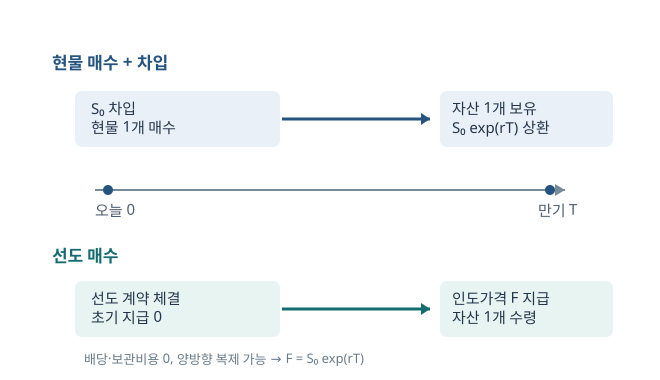

선도가격, 보유비용, 베이시스
선도가격은 현물을 오늘 사서 보유하는 비용과 선도로 만기에 같은 자산을 받는 비용을 맞춰 구한다. 복리에서 출발해 배당·쿠폰·외화금리·보관비용을 차례로 반영한다.
무차익 가격의 질문
현물 매수와 선도 매수가 만기에 같은 자산을 준다면 두 경로의 비용이 같아야 한다. 이렇게 얻은 공정 인도가격 \(F_{0,T}\)는 실제 확률 아래의 기대 현물가격 \(E[S_T]\)와 다른 개념이다.
현물가격이 100원, 1년 무위험 금리가 연속복리 5%라면 배당 없는 자산의 복제비용은 \(100e^{0.05}\approx105.13\)원이다. 투자자가 주가가 평균 120원이 될 것으로 믿더라도 1년 선도 인도가격이 곧바로 120원이 되는 것은 아니다. 120원에 선도를 매도하고 현물을 차입금으로 사 두면 만기에 같은 자산을 인도하면서 차입금 105.13원을 갚고 차액을 잠글 수 있기 때문이다. 전망은 계약을 매수할지 결정할 수 있지만, 무차익 가격의 기준은 복제비용이다. 실제 시장에서는 복제의 거래비용과 제약을 함께 고려한다.
인도가격 120인 선도를 굳이 체결한다면 선지급금은 얼마일까?
현물 100, 1년 연속복리 금리 5%, 배당 0이면 공정 인도가격은 약 105.13이다. 인도가격 120인 매수 선도의 최초 가치는 \(100-120e^{-0.05}\approx-14.15\)다. 따라서 매수자가 이런 계약을 받아들이려면 체결 시 약 14.15를 보상받아야 두 거래의 전체 가치가 같아진다. 만기 기준 차액 \(120-105.13\approx14.87\)을 현재가치로 할인한 금액이다.
이산복리에서 시작하기
초기금액 \(W_0\)를 연 \(r\)의 명목금리로 \(T\)년간, 1년에 \(m\)번 복리로 운용한다고 하자. 한 번의 이자기간은 \(1/m\)년이고 매 기간 성장배수는 \(1+r/m\)다. 총 \(mT\)번 곱하므로
\(m=1\)이면 연복리, \(m=2\)이면 반기복리다. 같은 명목금리 \(r>0\)라면 이자에 이자가 더 자주 붙을수록 만기금액이 커진다.
연 12% 명목금리의 월복리는 한 달 1%다. 100원의 1년 뒤 금액은 \(100(1.01)^{12}\approx112.68\)원이고, 확정된 만기금액 \(X_T\)의 현재가치는 \(PV_0(X_T)=X_T/(1+r/m)^{mT}\)다. 운용과 할인은 같은 성장배수의 정방향·역방향 계산이다.
복리 빈도를 숫자로 확인하기
\(W_0=1,000\), \(r=10\%\), \(T=5\)년일 때 같은 명목 연율을 복리 빈도별로 적용하면
복리 빈도가 높을수록 같은 명목금리에서 만기금액이 커진다. 실제 현금흐름의 할인에는 그 시장의 금리 관례를 적용한다.
서로 다른 복리 빈도의 금리를 직접 빼서 비교하면 안 된다. 연복리 10%의 1년 성장배수는 1.10이고, 반기복리 명목금리 10%의 성장배수는 \((1.05)^2=1.1025\)다. 같은 만기·같은 성장배수로 환산한 뒤 비교해야 한다. 연복리 10%와 경제적으로 동등한 연속복리율은 \(\ln(1.10)\approx9.531\%\)다. \(e^{0.09531}\approx1.10\)이므로 표기 금리는 낮아 보여도 1년 동안 같은 돈이 된다. 선도 식의 \(e^{rT}\)에 넣을 \(r\)도 이렇게 관례를 맞춰야 한다.
연속복리와 할인
\(m\)을 무한히 크게 할 때 \(\lim_{m\to\infty}(1+r/m)^{mT}=e^{rT}\)이므로 \(W_T=W_0e^{rT}\)다. 위 숫자는 \(1,000e^{0.5}\approx1,648.72\)가 된다. 확정된 미래금액 \(X_T\)를 오늘 얼마로 바꿀지는 이 식을 뒤집어 \(PV_0(X_T)=X_Te^{-rT}\)로 구한다. 시간 0의 1원과 시간 \(T\)의 1원을 같은 칸에 더하지 않는 것이 모든 선도가격 유도의 출발점이다.
성장배수의 로그는 \(mT\ln(1+r/m)\)이다. \(x=r/m\)으로 두면 \(m\ln(1+r/m)=r[\ln(1+x)/x]\)이고, \(x\to0\)에서 대괄호가 1로 수렴한다. 따라서 로그 성장량은 \(rT\), 성장배수는 \(e^{rT}\)가 된다.
서로 다른 만기 금리를 쓸 때
6개월 현금흐름에는 6개월 무위험 할인율, 1년 현금흐름에는 1년 무위험 할인율을 쓴다. \(r_{0,t}\)를 만기 \(t\)의 연속복리 무위험 금리로 두면 할인인자는 \(e^{-r_{0,t}t}\)다. 모든 만기에 동일한 \(r\)을 쓰는 식은 설명을 위한 단순화다.
예컨대 1년 뒤 확실히 110원을 받는 거래의 1년 연속복리 할인율이 10%면 현재가치는 \(110e^{-0.10}\approx99.53\)원이다. 오늘 99.53원을 같은 조건으로 운용하면 다시 110원이 된다. 반대로 6개월 뒤 50원과 1년 뒤 60원을 받는 채권은 \(50e^{-r_{0,0.5}\times0.5}+60e^{-r_{0,1}\times1}\)로 지급일마다 따로 할인해야 한다. 두 지급액을 합쳐 110원을 1년 할인하면 먼저 받은 50원의 시간가치를 놓친다.
현물가격·선도가격·인도가격·계약가치
\(S_t\)는 시점 \(t\)의 현물가격, \(F_{t,T}\)는 시점 \(t\)에 새로 약정할 만기 \(T\)의 공정 선도가격이다. \(K\)는 이미 체결한 계약에 적힌 고정 인도가격이며, \(f_t\)는 그 오래된 계약의 현재가치다. 새 계약은 공정 \(K=F_{t,T}\)로 시작해 보통 \(f_t=0\)이다. 시간이 흐른 뒤 \(F_{t,T}\)가 움직여도 기존 \(K\)는 바뀌지 않으므로 \(f_t\)가 0이 아니게 된다.
투자자산과 소비자산
주식·채권처럼 보유자가 주로 투자 수익을 얻기 위해 들고 있고 공매도·대출이 가능한 자산은 현물과 선도의 현금흐름을 비교적 쉽게 복제한다. 석유나 구리처럼 생산에 즉시 투입할 수 있는 자산은 재고 보유의 편익수익률이 있어 부족한 재고를 공매도하기 어려울 수 있다. 둘 다 선도가격에 자금조달·보관비용이 영향을 주지만, 소비자산에는 가격을 한 점으로 고정하기 어려운 제약이 있다.
주식 1주를 빌려 공매도하면 만기에 같은 주식을 다시 사서 돌려줄 수 있다는 가정은 비교적 명확하다. 반면 정유공장이 가동에 꼭 필요한 원유 재고를 빌려 팔아 버리면 생산 중단 위험이 생겨, 재고 소유자는 높은 대여료를 받아도 응하지 않을 수 있다. 현물을 공매도할 수 없으면 선도 과소평가에 대응하는 역차익거래가 막힌다. 한쪽 복제 거래만 가능할 때는 가격의 한쪽 경계만 강하게 말할 수 있다는 점이 투자자산과 소비자산의 중요한 차이다.
보유비용 공식의 한 단계씩 유도
배당과 보관비용이 없는 투자자산 한 단위를 오늘 \(S_0\)에 사고 그 금액을 빌린다. 만기에 자산을 선도 매도해 \(F_{0,T}\)를 받고 차입금 \(S_0e^{rT}\)를 갚는다. 확정 순현금흐름이 0이 되는 가격은 \(F_{0,T}=S_0e^{rT}\)다.
시장가격 \(F^{\rm mkt}_{0,T}>S_0e^{rT}\)라면 현물 매수·선도 매도로 만기에 \(F^{\rm mkt}_{0,T}-S_0e^{rT}>0\)을 확정한다. 반대로 \(F^{\rm mkt}_{0,T}<S_0e^{rT}\)라면 현물을 공매도하고 매도 대금을 운용한 뒤, 선도로 자산을 사서 반환한다. 이때 만기 차익은 \(S_0e^{rT}-F^{\rm mkt}_{0,T}>0\)이다. 두 거래를 모두 비용 없이 실행할 수 있을 때 공정가격은 한 점 \(S_0e^{rT}\)로 정해진다.
만기 이전의 확정 배당 \(I_i\)는 현물 보유자가 받고, 확정 보관비 \(C_j\)는 현물 보유자가 낸다. \(D(0,u)\)를 시점 \(u\)에 지급할 1원의 오늘 가격인 할인인자로 정의하면, 오늘의 순보유비용은 \(S_0+\sum_jD(0,t_j)C_j-\sum_iD(0,t_i)I_i\)다. 이를 만기 비용으로 바꾸어 선도 인도가격과 같게 두면
금리가 일정한 연속복리 \(r\)라면 \(D(0,u)=e^{-ru}\)여서 분모의 역수는 \(e^{rT}\)다. 이산 현금흐름과 연속 보관비용을 함께 쓸 때는 같은 비용을 두 번 넣지 않는다.
보관비는 선도가격을 올리고 배당은 내린다. 오늘 가격 100, 배당 현재가치 2, 보관비 현재가치 1이면 순보유비용은 \(100+1-2=99\)다. 이 99를 만기까지 조달한 금액이 인도가격이다. 현금흐름을 각각 발생일의 할인인자로 현재가치화한 뒤 만기 할인인자로 나누는 순서가 서로 다른 지급일을 정확히 반영한다.

기존 선도계약의 현재가치
시점 \(t\)에 남은 기간을 \(\tau=T-t\)라 하자. 기존 매수 계약과 오늘 체결하는 새 매도 계약을 같은 만기로 결합하면 만기에는 자산 인수·인도가 상쇄되어 확정금액 \(F_{t,T}-K\)만 남는다. 그러므로
배당이 없는 주식이라면 \(F_{t,T}=S_te^{r_t\tau}\)를 대입해 \(f_t=S_t-Ke^{-r_t\tau}\)가 된다. 알려진 배당의 현재가치가 \(I_t\)라면 \(f_t=S_t-I_t-Ke^{-r_t\tau}\). 선도가격 \(F_{t,T}\)는 새 약정의 인도가격, \(f_t\)는 기존 약정의 지금 청산 가치라는 구별이 이 식에서 선명해진다.
\(t=T\)에는 할인인자가 1이고 남은 배당이 없으므로 \(f_T=S_T-K\)가 된다. 새 계약의 선도가격은 시점 \(t\)에 가치를 0으로 만드는 \(K=F_{t,T}\)이고, 기존 계약은 약정 \(K\)가 고정되어 있어 시장가격 변화가 \(f_t\)에 반영된다.
배당락일에 주가가 떨어지면 기존 매수 선도 가치도 같은 폭으로 떨어질까?
확정 배당 \(D\)가 이미 가격에 반영돼 있다면 배당락 직전 현물가격 \(S_-\)와 직후 \(S_+\)의 차이는 대략 \(D\)다. 동시에 앞으로 받을 배당의 현재가치 \(I_t\)에서도 해당 \(D\)가 빠진다. 따라서 \(S_t-I_t\)의 두 변화가 서로 상쇄되어, 배당락 자체만으로 기존 선도 가치가 갑자기 \(D\)만큼 줄지는 않는다. 예상과 다른 배당 발표나 금리 변화가 함께 일어나면 가치는 달라질 수 있다.
배당 없는 주식: 과대평가된 선도
90일을 \(T=1/4\)년으로, \(S_0=\$20\), 연속복리 금리 \(r=4\%\)로 둔다. 무차익 선도가격은 \(20e^{0.04/4}\approx\$20.2010\)이다. 시장 선도가격이 \(21\)이면 너무 비싸다. 오늘 \(20\)를 빌려 주식을 사고, 동시에 만기에 그 주식을 \(21\)에 팔기로 약정한다. 오늘 순현금흐름은 0이다.
선도 매도로 미래 판매가격 21달러를 잠근다. 오늘 산 주식이 인도할 물건이므로 만기 주가와 관계없이 약정을 이행할 수 있다. 다음 표에서 두 거래의 \(S_T\)가 어떻게 상쇄되는지 확인한다.
선도 시장에 매수·매도 호가가 다르면 어느 가격으로 검산할까?
현물 매수·선도 매도 차익거래에는 선도를 팔 수 있는 매수호가를 쓴다. 이 호가가 현물 취득·차입·거래비용을 합친 만기금액보다 높아야 이익이 잠긴다. 화면의 중간값이 21달러라도 실제 매수호가가 20.15달러면 복제비용 약 20.2010달러를 넘지 못한다. 체결 가능한 호가로 양쪽 거래를 동시에 검산한다.
만기 현금흐름이 왜 확정되는가
만기에 주식의 시장가치는 \(S_T\)지만 선도 매도에 주식을 넘기고 \(21\)을 받으므로 \(S_T\)는 사라진다. 빚 상환액은 \(20e^{0.01}\approx20.2010\)이다. 확정 이익은 \(21-20.2010\approx\$0.7990\)다.
| 거래 | 오늘 | 만기 |
|---|---|---|
| \(20\) 차입 | \(+20\) | \(-20e^{0.01}\) |
| 주식 1주 매수 | \(-20\) | \(+S_T\) |
| 선도 1주 매도 | \(0\) | \(21-S_T\) |
| 합계 | \(0\) | \(21-20e^{0.01}\) |
거래비용이나 공매도·자금조달 제약이 있는 현실에서는 정확히 한 점이 아니라 차익거래가 작동하지 않는 가격 범위가 생길 수 있다.
차입금리가 실제로 더 높거나 거래세·호가 스프레드가 차익 0.7990달러를 넘으면 순이익은 사라진다. 표의 각 거래를 제시된 가격과 수량으로 실행할 수 있는지가 차익거래의 조건이다.
이표채 선도: 쿠폰 시점에 맞춰 할인하기
현재 채권가격 \(1,200\), 6개월과 1년의 쿠폰이 각각 \(50\), 인도 직후에는 1년 쿠폰을 선도 매수자가 받지 않는 배당락·쿠폰락 기준이라고 하자. 6개월 금리 8%, 1년 금리 10%를 연속복리로 쓰면 선도 매수자가 못 받는 쿠폰의 현재가치는 \(50e^{-0.08/2}+50e^{-0.10}\)이다. 따라서
만기 쿠폰의 귀속이 다르면 마지막 \(50\)의 처리도 달라진다. 인도 시점과 쿠폰 지급 시점의 선후를 계약에서 확인해야 한다.
인도일과 쿠폰 지급일이 같으면 쿠폰은 누구의 것일까?
날짜가 같다는 정보만으로는 정할 수 없다. 계약이 쿠폰 지급 직전의 채권을 인도하는지, 지급 직후 쿠폰락 채권을 인도하는지에 따라 선도 매수자와 매도자 중 쿠폰 수취자가 달라진다. 쿠폰 50을 복제비용에서 빼야 하는지도 그 귀속에 달려 있다. 채권 선도 문제에서는 인도되는 채권의 가격이 경과이자를 포함하는지까지 먼저 확인해야 한다.
이표채 차익거래를 현금흐름으로 검산
현물채권을 사기 위해 \(48.04\)를 6개월까지 빌리고 나머지 \(1,151.96\)을 1년까지 빌린다. 6개월에는 첫 쿠폰 \(50\)으로 첫 빚을 갚는다. 1년에는 채권의 두 번째 쿠폰 \(50\)과 선도 매도 인도대금 \(F\)를 받고, 장기 차입금 \(1,151.96e^{0.10}\approx1,273.11\)을 갚는다. 순이익은 \(F+50-1,273.11=F-1,223.11\)이다. 시장가격 \(F=1,230\)이면 약 \(6.89\)의 확정 이익이 생긴다. 이 계산이 앞 슬라이드의 식을 독립적으로 검증한다.
첫 차입액은 정확히 \(50e^{-0.04}\)이며 반올림하면 \(48.04\)다. 둘째 차입액도 반올림하기 전의 \(1{,}200-50e^{-0.04}\)를 써야 위 선도가격과 같은 결과가 나온다. 날짜별로 쿠폰과 차입 상환액을 짝지어야 확정 이익을 얻는다.
외화는 ‘보유하면 외국 금리를 받는 자산’이다
환율 \(S_0\)를 달러/마르크(DM), 즉 1 DM의 달러 가격으로 표시한다. 달러 금리 \(r_{\$}=5\%\), 마르크 금리 \(r_{DM}=8\%\)라면 마르크를 보유해 외국 금리를 받을 수 있다. 따라서 외국 금리가 배당수익률처럼 달러 기준 선도가격을 낮춘다. 60일을 예시처럼 \(T=1/6\)년으로 놓으면
역사적 통화 DM은 유로 도입 전의 예시다. 오늘의 실제 환율이나 금리를 나타내는 숫자로 읽지 않는다.
외국금리 8%가 달러금리 5%보다 높으면 DM을 지금 사서 보유하는 투자자는 달러 투자보다 빠르게 DM 수량을 늘릴 수 있다. 그래서 달러/DM 기준의 공정 선도환율은 오늘 현물환율 0.55보다 낮다. 이 결과를 ‘DM의 미래 가치가 반드시 하락한다’는 예측으로 읽으면 안 된다. 두 통화의 확정 금리로 만기 1 DM을 만드는 비용을 비교한 결과다. 환율을 반대로 DM/달러로 표시하면 어느 금리를 분자에서 빼는지도 함께 바뀌므로 단위를 먼저 적어야 한다.
커버드 금리평가의 복제 거래
만기에 1 DM을 확보하려면 오늘 \(e^{-r_{DM}T}\) DM을 사서 독일에서 운용한다. 오늘 비용은 \(S_0e^{-r_{DM}T}\)달러이고, 달러로 차입했다면 만기 상환액은
1 DM 매수 선도는 같은 만기 자산을 \(F_{0,T}\)달러에 제공한다. 두 경로의 비용이 같아야 한다. BIS의 커버드 금리평가 설명.
현실에서는 달러 조달비용·규제 자본·상대방 위험 때문에 이 단순 등식과 시장가격 사이에 cross-currency basis가 지속될 수 있다. 이는 식이 쓸모없다는 뜻이 아니라, 복제 거래에 필요한 조건이 비용 없이 충족되지 않는다는 신호다.
주가지수의 연속 배당수익률
기초지수가 연속 배당수익률 \(q\)를 지급하고 배당을 재투자할 수 있다고 하자. 만기에 1단위의 지수를 확보하려면 오늘 \(e^{-qT}\)단위를 사면 되고, 그 비용은 \(S_0e^{-qT}\)다. 이를 금리 \(r\)로 조달하면 만기비용은 \(S_0e^{(r-q)T}\). 따라서
배당수익률이 시간에 따라 알려진 함수 \(q(u)\)라면 \(qT\) 대신 \(\int_0^Tq(u)\,du\)를 쓴다. 알려진 개별 배당금에는 슬라이드 11의 이산 배당 현재가치 식이 더 직접적이다. CME 지수선물 공정가치 설명.
\(q>r\)이면 배당 재투자 효과가 자금조달비용보다 커서 이론 선도가격이 현물보다 낮다. 이는 오늘 지수를 보유하는 동안 받는 배당의 가치가 인도가격에 반영된 결과다.
소비자산과 편익수익률의 범위
원유를 보관하면 자금조달비용과 창고비용이 들지만, 재고가 있으면 생산 중단을 피하거나 일시적 부족을 이용할 수 있다. 이 재고의 편익을 관측하기 어려운 편익수익률 \(y\)로 나타내면 설명식으로 \(F\approx S_0e^{(r+s-y)T}\)를 쓴다. 그러나 이것은 편익을 모두 확정 현금흐름처럼 복제한 엄밀한 차익거래 등식이 아니다.
현물을 살 수 있고 보관할 수 있다면 선도 과대평가에는 현물 매수·선도 매도로 대응하므로 \(F\leq S_0e^{(r+s)T}\)라는 상한이 생길 수 있다. 반대 방향에는 현물 공매도가 어렵고 재고를 포기할 수 없어 같은 강도의 하한이 없을 수 있다. 투자자산의 등식과 소비자산의 경계 조건을 구분해야 한다.
예를 들어 \(r=5\%\), 비례 보관비용 \(s=2\%\), 설명용 편익수익률 \(y=10\%\)라면 1년물의 직관적 가격은 \(S_0e^{0.05+0.02-0.10}=S_0e^{-0.03}<S_0\)다. 오늘 재고가 없으면 공장이 멈추는 생산자에게는 미래 인도 선도가 현재 재고의 서비스를 제공하지 못한다. 이 서비스의 암묵적 가치 때문에 공매도를 통한 역방향 복제가 막히고, 편익수익률 식을 모든 원자재에 적용하는 등식으로 사용할 수 없다.
원유를 보유하는 편익은 배당처럼 확정 현금으로 받을 수 있을까?
편익수익률은 재고가 있어 생산을 계속하거나 공급 차질에 대응할 수 있는 서비스의 암묵적 가치다. 주식 배당처럼 지급일과 금액이 계약으로 확정된 현금이 아니다. 재고가 매우 부족하면 오늘 원유를 갖는 가치가 미래 인도 선도를 갖는 가치보다 크게 느껴져 현물가격이 선도가격보다 높을 수 있다. 편익을 숫자 \(y\)로 표시한 식은 직관을 주지만 그 자체가 모든 상태에서 복제 가능한 배당식은 아니다.
과대·과소평가를 발견했을 때의 거래
시장 선도가격이 복제비용보다 높으면 선도를 매도하고 현물을 사서 보유한다. 낮으면 선도를 매수하고 현물을 공매도한 뒤 공매도 대금을 운용한다. 후자의 거래는 대주 가능 여부, 배당 지급 의무, 재고 보유자의 편익 때문에 어려울 수 있다. 선물은 일일정산이 있어 여기에 증거금의 현금흐름과 차입비용도 더해진다. ‘이론값과 다르다’와 ‘오늘 누구나 확정 이익을 낸다’는 같은 명제가 아니다.
이론 선도가격이 100인데 거래·자금조달·공매도 비용이 계약당 2라면 시장가격 101에서 1의 차이는 실행 비용보다 작아 차익거래가 아니다. 103이라면 현물 매수·선도 매도의 순차익 가능성을 검토할 수 있지만, 주문을 동시에 체결할 수 있는지와 실제 호가의 매수·매도 가격까지 확인해야 한다. 이론값에서 거래비용을 뺀 순현금흐름이 모든 상태에서 양수여야 ‘확정 차익’이라고 부를 수 있다. 가격 차이는 제약의 신호일 수도 있고 단순한 거래비용 범위 안의 정상적인 호가일 수도 있다.
이론 선도가격이 100인데 시장가격이 101이면 즉시 차익거래일까?
현물 매수·선도 매도의 수수료, 호가 스프레드, 보관·차입비용이 계약당 2라면 1의 가격 차이는 비용보다 작아 순이익이 없다. 역방향 차익거래에는 공매도 대주료나 재고 제한이 더해질 수도 있다. 시장가격과 이론값의 차이에서 실제 실행비용을 뺀 뒤에도 모든 상태에서 이익이 확정되는지 확인해야 한다. 이론값은 거래 가능한 가격 범위를 판단하는 기준점이다.
지수선물의 이론값 계산
현물지수 \(S_0=8,300\), 연속복리 금리 \(r=8\%\), 배당수익률 \(q=5\%\), 만기 \(T=0.5\)년이면
시장 선도가격 \(8,494\)는 약 \(68.56\)포인트 높다. 지수 1단위의 현금복제가 가능하고 거래비용이 없다면 과대평가다. 계산의 관건은 금리 8%에서 배당 5%를 빼는 이유다. 지수를 보유하면 배당을 받기 때문에 미래 인도를 위해 오늘 지수를 사는 순비용이 줄어든다.
식의 지수 \((r-q)T=(0.08-0.05)\times0.5=0.015\)는 6개월 동안의 순보유비용이다. 금리만 적용하면 \(8{,}300e^{0.04}\approx8{,}638.73\)으로 너무 높게 계산되고, 배당 5%만 뺀 뒤 금리의 기간을 반영하지 않아도 오류가 난다. 두 연율 모두 같은 0.5년을 곱해야 한다. 시장가격과 이론값의 차이 68.56포인트를 원화 수익으로 바꾸려면 지수선물의 계약 승수와 계약 수를 추가로 곱해야 한다. 포인트 차이 자체는 투자자가 바로 받는 원화 금액이 아니다.
지수 차익거래의 단위별 현금흐름
오늘 \(e^{-0.05\times0.5}\approx0.97531\)단위의 지수를 사면 배당 재투자로 만기에 1단위가 된다. 비용은 약 \(8,095.07\)이며 이를 차입하면 만기 상환액은 \(8,095.07e^{0.08\times0.5}\approx8,425.44\)다. 선도 매도로 만기에 지수 1단위를 \(8,494\)에 넘기면 약 \(68.56\)의 확정 차액이 남는다. 실제 거래에는 지수 바스켓 구성·배당 예측·거래비용·차입 조건이 포함되어 오차가 생긴다.
복제 포트폴리오에서 오늘 차입액과 지수 매수액이 같으므로 초기 순현금은 0이다. 만기에는 배당 재투자 덕분에 지수 1단위가 있고, 이것을 선도 매도 계약에 인도해 8,494를 받는다. 차입금 8,425.44를 상환한 뒤 남는 68.56은 만기 지수가 7,000이든 10,000이든 같다. 지수 수준 \(S_T\)가 식에서 소거되는지 확인해야 차익거래의 무위험성을 검증한 것이다. 실제 지수 자체를 보유할 수 없으므로 구성주식 바스켓의 추적오차는 별도로 남는다.
주가지수 자체를 창고에 보관할 수 없는데 복제 거래는 어떻게 하나?
지수는 숫자이므로 실물 한 개를 사서 인도할 수 없다. 대신 구성주식 바스켓이나 지수를 추종하는 자산을 필요한 비중으로 보유하고 배당을 재투자해 지수 노출을 복제한다. 구성종목 변경, 거래세, 배당 예측오차와 추적오차 때문에 이론식의 완벽한 복제와 실제 거래 사이에는 차이가 생긴다. ‘지수 1단위를 산다’는 설명은 이런 포트폴리오를 간단히 나타낸 것이다.
서로 다른 두 ‘콘탱고/백워데이션’
첫째, 현물과 선도 비교에서는 \(F_{0,T}>S_0\)를 콘탱고, \(F_{0,T}<S_0\)를 백워데이션이라 부른다. 둘째, 미래 현물 기대값과 비교하는 ‘정상 백워데이션’은 \(F_{0,T}<E^{P}[S_T]\)처럼 실제 확률 \(P\) 아래의 기대와 선도가격을 비교한다. 두 기준은 다르므로 \(F>S_0\)이면서 동시에 \(F<E^{P}[S_T]\)일 수 있다.
예컨대 오늘 현물 100, 6개월 선도 105, 미래 현물의 주관적 기대값 110이라면 선도는 오늘 현물보다 높으므로 첫 기준에서 콘탱고지만 기대 미래 현물보다 낮으므로 둘째 기준에서 정상 백워데이션이다. 첫 비교에는 오늘 관측 가능한 두 가격이 들어가고, 둘째 비교에는 미래 현물의 확률적 전망이 들어간다. 전망이 바뀌어 110이 102가 되어도 오늘 현물과 선도의 순서는 즉시 같은 방식으로 바뀌지 않을 수 있다. 용어를 쓸 때 어느 두 숫자를 비교했는지 반드시 적어야 한다.
여기서는 베이시스를 \(b_t=F_{t,T}-S_t\)로 정의한다. 다른 시장에서는 \(S_t-F_{t,T}\)를 베이시스로 부르기도 하므로 부호 관례를 밝혀야 한다. 일정한 \(r,q\) 아래 \(F_{t,T}=S_te^{(r-q)(T-t)}\)라면 \(b_t=S_t[e^{(r-q)(T-t)}-1]\)이고, 만기가 가까워질수록 이상적 조건에서 0으로 수렴한다. CME의 현물·선물 수렴 설명.
만기에 현물 인도가 가능하고 품질·장소·인도 시점이 같다면 \(F_{T,T}>S_T\)일 때 현물을 사서 인도하고, \(F_{T,T}<S_T\)일 때 반대 거래를 하려는 유인이 생긴다. 차익거래가 실행 가능한 이상적인 조건에서는 결국 \(F_{T,T}=S_T\)가 되어 베이시스가 0이다. 현금결제 지수선물은 최종 결제값을 지수에 맞추는 계약 규칙이 이 수렴을 직접 만든다. 만기 수렴은 미래 현물가격을 오늘 정확히 예측한다는 뜻이 아니다. 오늘의 선도가격과 오늘의 현물가격 사이 간격이 만기가 가까워질수록 사라진다는 뜻이다.
헤지자가 만기 전 선물 포지션을 닫으면 최종 기초가격보다 그날의 베이시스가 성과를 좌우할 수 있다. 현물가격 상승을 막으려고 선물을 매수했는데 현물 구매일에 선물가격이 현물보다 예상보다 덜 올랐다면 비용 상쇄가 부족하다. 이상적 만기 수렴은 헤지 종료일이 만기와 정확히 같고, 상품 품질·장소·결제 기준이 일치할 때 강하다. 다른 날짜에 닫는 교차헤지에는 수렴의 법칙만으로 완전헤지를 보장할 수 없다.
KOSPI200 그래프에서 읽을 수 있는 것과 없는 것
현물지수와 선물가격의 차이는 만기, 금리, 예상 배당, 거래 수급, 제약에 따라 움직인다. 베이시스가 음수인 그래프를 해석할 때는 현물과 선물의 표시 시점, 연결한 선물의 만기, 배당락일과 만기 교체를 확인한다. 이 정보가 있어야 가격 차이의 원인을 가려낼 수 있다. 선물이 현물보다 먼저 움직인 구간에서도 두 시장의 정보 반영과 거래 제약을 함께 살펴야 선후 관계를 해석할 수 있다.
이 그래프는 두 개의 세로축을 쓴다. KOSPI200 현물지수와 선물지수는 왼쪽의 지수 포인트 축, 보라색 베이시스는 오른쪽의 작은 포인트 축에 대응한다. 보라색 띠가 현물지수와 비슷한 높이에 보이더라도 두 값의 크기를 같은 눈금으로 비교하면 안 된다. 여기서 쓰는 부호 관례는 \(F_t-S_t\)이므로, 보라색이 0 아래에 있으면 같은 시점의 선물가격이 현물보다 낮다는 뜻이다.
한 그래프에 만기 다른 선물을 이어 붙이면 만기 교체일에 선물가격이 뛰거나 떨어진 것처럼 보일 수 있다. 이는 그날 현물시장에서 같은 크기의 충격이 발생했다는 뜻이 아닐 수 있다. 배당락일에는 현물지수가 배당만큼 조정되지만 선물가격은 이미 예상 배당을 반영했을 수 있다. 동일 시점·동일 만기·동일 지수 산정 기준으로 맞춘 뒤 베이시스를 계산해야 경제적 변화와 자료 연결 효과를 구별할 수 있다.
선물과 선도가격은 언제 달라지는가
선물은 유리한 가격변화의 이익을 매일 현금으로 받고 불리한 손실을 매일 낸다. 선도는 보통 만기까지 한 번에 정산한다. 금리가 확정적이면 중간 정산액의 재투자·조달 조건이 예측 가능해 두 가격이 가까워진다. 금리가 확률적으로 변하고 선물가격 변화와 양의 상관관계가 있으면 이익이 나올 때 금리도 높아 재투자에 유리해 선물가격이 선도가격보다 높아질 수 있다. 반대 상관관계면 방향이 뒤집힐 수 있다. 이것은 특정 모형·담보·재투자 가정 아래의 경향이지 모든 시장에서 부호를 보장하는 법칙은 아니다.
왜 중간 현금흐름이 가격에 영향을 주나
만기 손익이 같더라도 A계약은 오늘 1원을 받고 B계약은 만기 1원을 받는다면 두 계약의 현재가치는 다르다. 선물의 일일정산액은 그날 이후의 금리로 운용하거나 조달해야 한다. 이 미래 금리가 선물 손익과 함께 변하면 ‘손익의 합계’와 ‘그 손익을 운용한 만기 재산’이 달라진다.
예를 들어 선물 매수가 첫날 10을 벌 때 이후 금리가 높고 10을 잃을 때 낮다면 이익은 높은 금리로 재투자되고 손실은 낮은 금리로 조달된다. 반대의 공변동이면 선물 보유가 불리하다. 중간 손익이 발생한 뒤의 금리가 가격 차이의 방향을 좌우한다.
복제 가능성이 결론을 결정한다
투자자산은 동일한 미래 현금흐름을 현물 보유와 차입·대여로 만들 수 있어 무차익 등식이 강하게 작동한다. 소비자산에는 재고 편익·공매도 제약으로 한쪽 차익거래만 가능해 상한이나 가격 구간을 얻는 경우가 많다. 현물-선물 베이시스의 부호와 선도-미래현물 기대값의 비교를 섞지 않으면 가격이 왜 그렇게 형성되는지 명확해진다.
무차익 식이 성립하려면 현물을 지금 살 수 있고, 필요하면 빌려 팔 수 있으며, 금리로 차입·대여하고, 배당·보관비를 같은 조건으로 처리할 수 있어야 한다. 이 조건 중 공매도만 막혀도 ‘선도가 너무 비싸면 현물 매수·선도 매도’는 가능하지만 ‘너무 싸면 현물 공매도·선도 매수’는 막힐 수 있다. 그래서 두 방향의 거래를 모두 끝까지 구성했는지가 등식을 주장할지, 한쪽 경계만 주장할지 결정한다. 가격식은 외워서 적용할 공식보다 거래 가능성에 대한 결론이다.
다음 장의 질문: 적정가격으로 위험을 얼마나 줄일까
공정가격 \(F_{0,T}\)를 알게 되면 기존 현금흐름에 \(Q(S_T-F_{0,T})\)를 더할 수 있다. \(Q\)의 부호와 크기를 조절해 위험을 완전히 없애거나 일부만 남긴다. 이후에는 평균 현금흐름만이 아니라 하위 5%의 현금흐름을 계산하고, 비선형 사업수익에서는 왜 선형 선도가 완전한 보험이 되지 못하는지 본다.
선도가격을 정확히 계산하면 헤지 수량도 자동으로 정해질까?
가격 \(F\)는 계약 한 단위의 공정 인도가격이고, 수량 \(Q\)는 기업이 얼마나 위험을 옮길지의 선택이다. 달러 매출 100만 달러가 확정이면 100만 달러 매도 선도가 환율 민감도를 없앨 수 있다. 그러나 매출 수량이 불확실하거나 환율이 제품 수요까지 바꾸면 100% 매도가 항상 최선은 아니다. 목표가 분산 축소인지 하방 자금 확보인지 정한 뒤 수량을 고른다.